AI新时代-大神教你使用python+Opencv完成人脸解锁（附源码）
好吧，伙计们，我回来了。说我拖更不写文章的可以过来用你的小拳拳狠命地捶我胸口....
那么今天我们来讲关于使用python+opencv+face++来实现人脸验证及人脸解锁。代码量同样不多，你可以将这些代码运用在其它一些智能领域，如智能家居，进门的时候判断你是谁，也可以加入机器学习判断来的人是客人还是熟人。在讲之前我们会先适当的拓扑一下关于人脸识别的知识点。OK废话少说下面开始正是话题。

解锁原理：
原理呢，其实很简单，没有那么复杂难懂（当然除了官方语言之外）。我们先来通俗的说一下利用Face++实现人脸匹配的原理。给大家推荐一个学习交流的地方：719+139+688，现在你打开了摄像头，然后恰好你按下了抓取。抓取之后，你的脸部图片会上传到远程服务器，然后服务端会提取你的面部情况生成一个唯一的指纹（标识码），这个指纹在Face++里面叫做face_token这个我们后面会继续讲到，这个指纹就代表你目前的身份。
 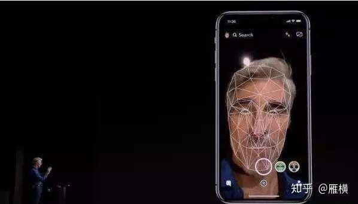
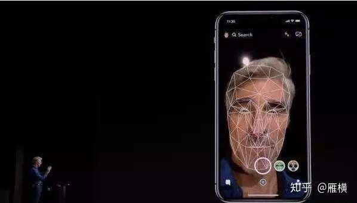
上传完经过服务端分析收录之后，服务端会通过json发送给你一个数据包，这个数据包里面有你面部全部特征。
当你拿到服务端返回过来的json之后，将face_token提取出来（这很重要，face_token相当于一把钥匙）然后你把拿到的face_token放到python的if里面去判断如果face_token相符就验证成功，如果不相符那么解锁失败。
环境拓扑：
操作系统：windows7
Python版本：python2.7
OpenCV版本：2.x
Face++接口
实现方案：
1.上传面孔（这个上篇文章我们已经实现摄像头抓取，这篇文章我们不做啰嗦，直接用一张面部图片代替）上传后json会返回面部指纹（face_token）
2.创建人脸集合，并将步骤1返回的face_token加入到集合中去
3.通过python的if判断是否收录当前面孔
代码部分：
1.获取面孔face_token：
 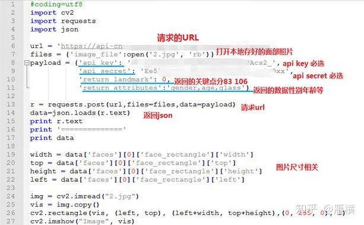
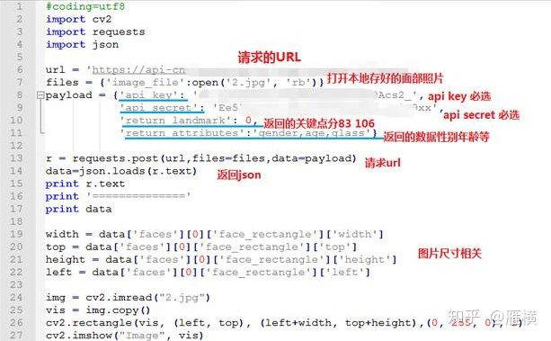
这里重点说一下request里面的内容：
api规定是要post提交，所以这里用了request.post()
传输的内容为请求的URL，图片路径（必填！可以是本地绝对路径，也可以是网络图片分别为image_file、image_url）data数据也就是payload里面的参数：
apikey/apisecret必填 没有的自行申请
return_attributes选填 里面有返回的数据 有年龄性别等等
return_landmark选填 是否检测返回人脸关键点0为不返回1为检测83个关键点2为检测106个关键点
运行效果：
我们随便找一张照片（对像素有要求的 切记 不然有的可能报错）
 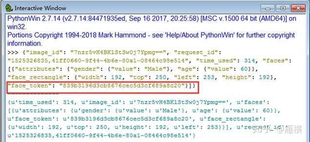
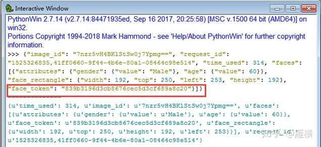 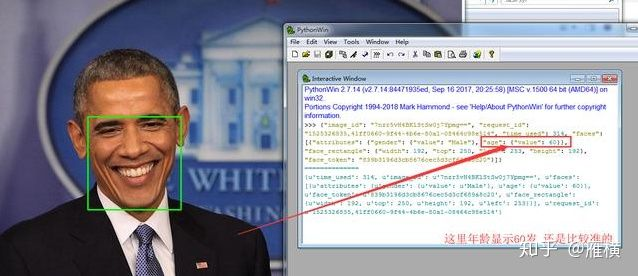
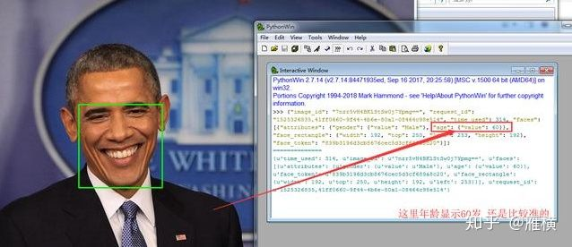
我们可以看到这个返回的json包里有很多的值，我们这里最重要的就是拿到这张脸的face_toen，然后保存起来，收录到服务端的时候需要。
注：这里可能有些朋友在网上随便找的照片可能报错，这很可能是图片像素的问题，尽量找高清的，运行后，人脸部分会被绿框标识。
2.创建人脸集合，并加入face_token
 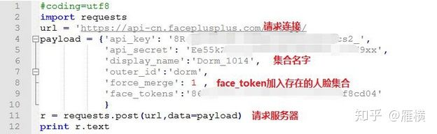
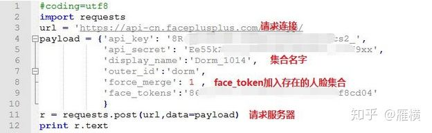
face_tokens里面填的就是刚才奥巴马图片返回的face_token，不要填错哦~
面部集合的名字也要记住，待会查询的时候也会用到的。
将上一部分获取到的face_token加入到一个新建的人脸集合中。
下次人脸对比将直接跟服务端收录的做指纹对比。这里再简单的点一下payload里面的几个参数：
display_name：人脸集合的名字
outer_id：FaceSet全局自定义标识
force_merge：
0：不将 face_tokens 加入已存在的 FaceSet 中，直接返回 FACESET_EXIST 错误
1：将 face_tokens 加入已存在的 FaceSet 中
face_tokens：传入的人脸标识
运行效果：
 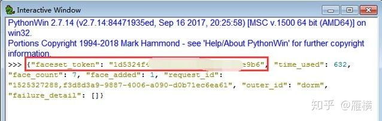
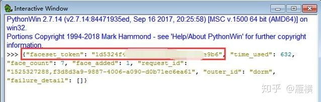
运行完毕后，会返回一个faceset_token，这个地方我们要记录下来，因为我们已经把我们的奥巴马的facetoken上传到服务端的我们创建的集合里了，这个faceset token就是我们的面部集合id 或者说是一个相册都可以。
3.判断是否为管理员：
 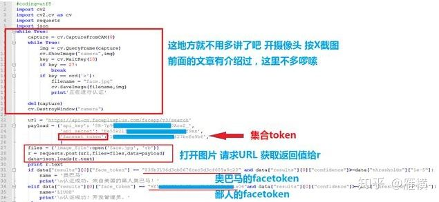
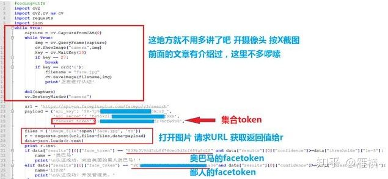
我们将奥巴马的面部值（face token）放入python的if里面，将要去查询的面部集合（相册）设置为我们前面获取的faceset tokens，然后我们随便照一张照片匹配一下。
 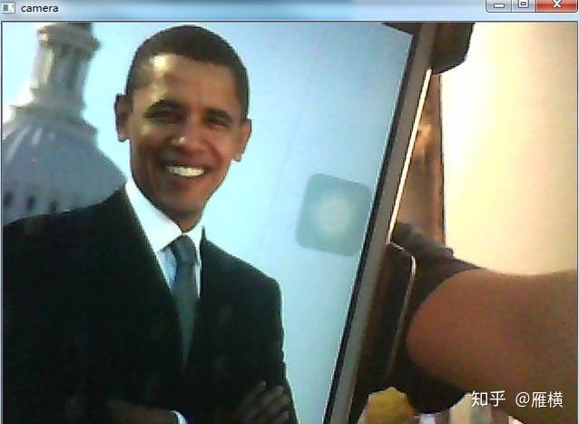
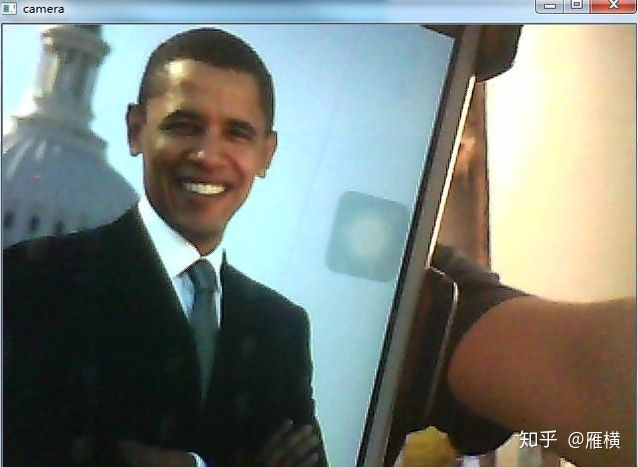
笔记本摄像头太low，很难识别，凑合看下效果吧，直接识别人脸还行。
 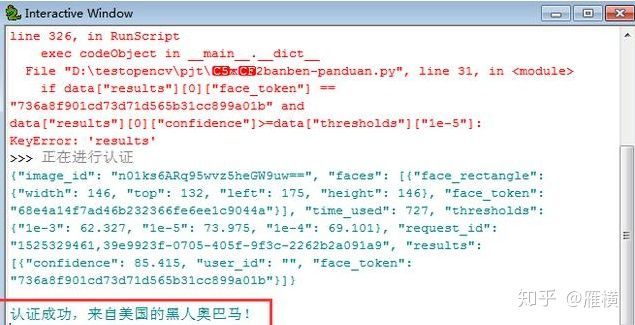
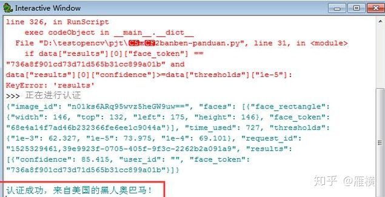
完成~
当然，按理说到现在应该开始有喷子来喷，用图片解锁不安全了吧，没关系，如果你想做的更高级，完全可以加上一些摇头 眨眼等等乱七八糟的验证，安全性是可以做到的。
1 条评论